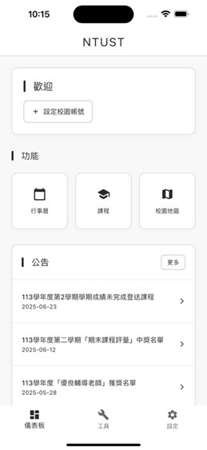

Although a similar school management system, TAT, already exists at NTUST, it lacks corresponding widgets. Therefore, I developed this student-focused school system during my spare time over the summer break.
This app integrates native iOS features like Widgets and Alarms to provide proactive notifications and quick access to information. Unlike the passive nature of the existing TAT system, TKT actively delivers information to the user.
